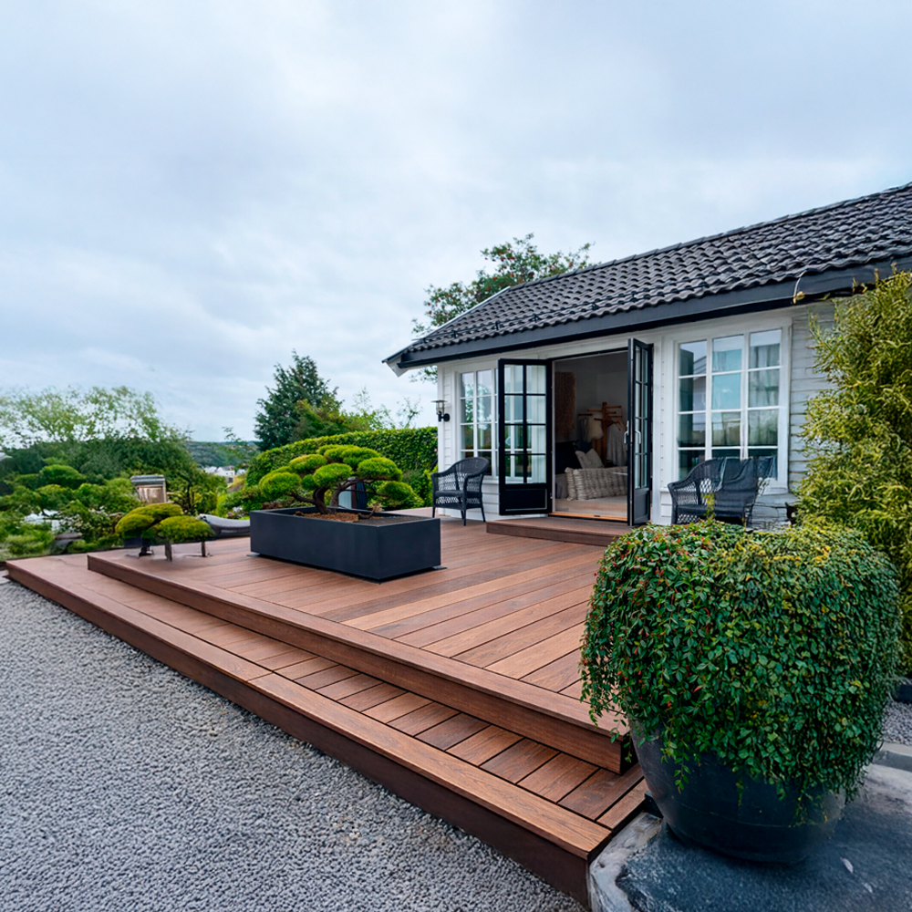
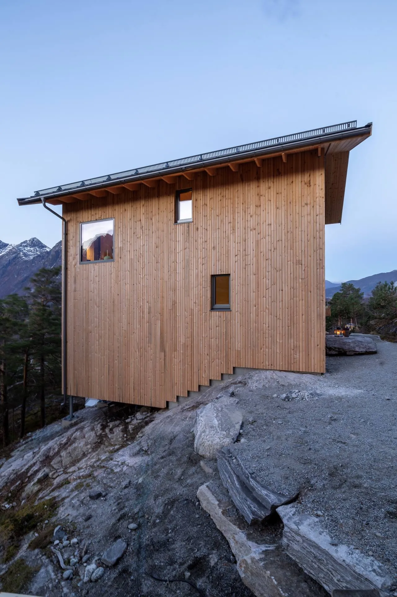

Hos Bolig i Bergen finner du et godt utvalg av trelast til både små og store byggeprosjekter. Enten du skal bygge en ny terrasse, fornye kledningen eller gjøre andre oppgraderinger på boligen, har vi materialer som passer til det norske klimaet. Med Bergens vær og mye nedbør i tankene er det viktig å velge treverk som tåler fukt og skiftende værforhold. Vi tilbyr derfor trelast som kombinerer god kvalitet, holdbarhet og et fint utseende.

| Materiale | Ca. pris |
|---|---|
| Trykkimpregnert furu | 350 kr/m² |
| Lerk | 600 kr/m² |
| Komposittbord | 900 kr/m² |

| Materiale | Ca. pris |
|---|---|
| Gran (grunna) | 300 kr/m² |
| Furu | 450 kr/m² |
| Termotre | 700 kr/m² |